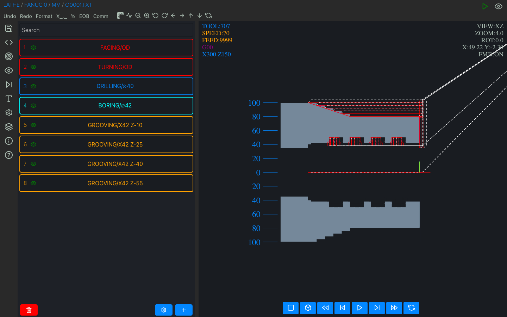
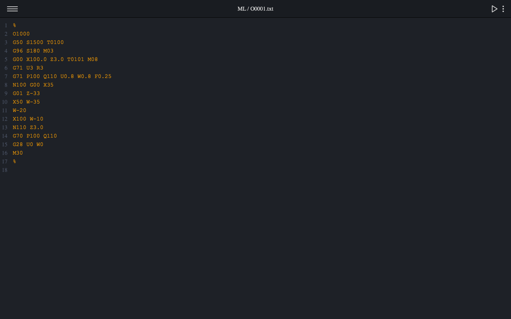
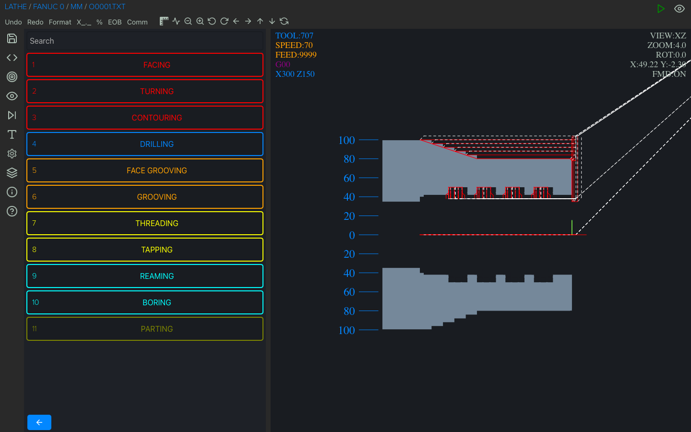
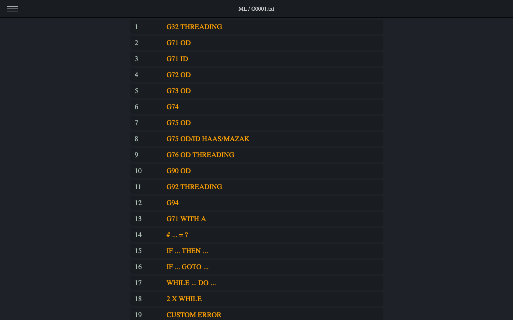
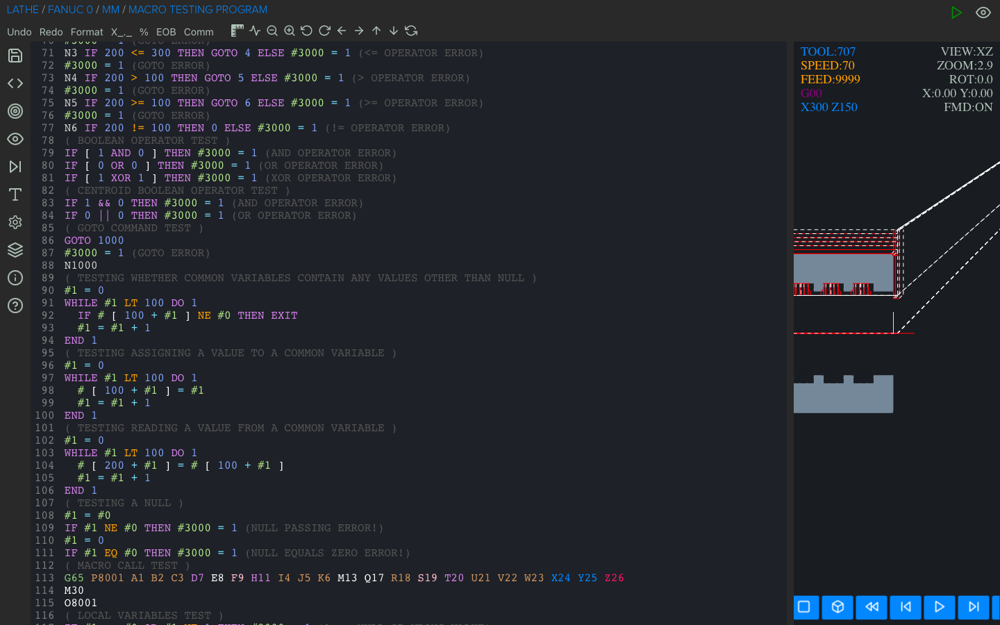
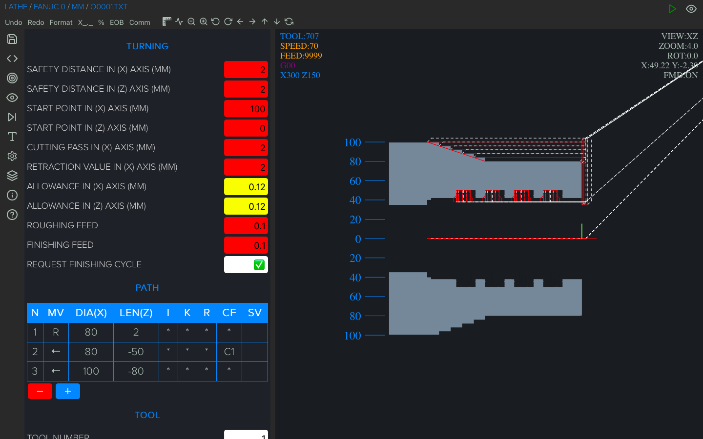
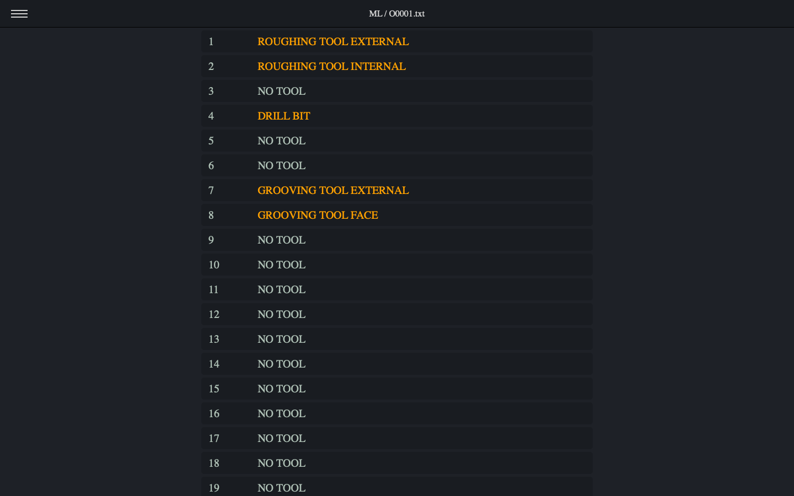
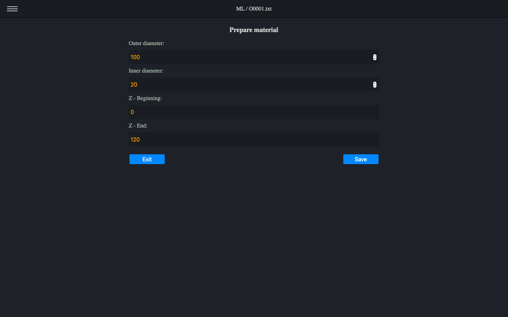

CNC Macro Lathe








CNC Macro Lathe is an advanced CNC code editor and backplotter for G-Code (RS-274) and Fanuc Macro B programs
for 2-axis lathe machines. This app comes with one of the best macro debuggers (shows all math and logical
calculations while executing the program).
$34.99
Viewport (simulator/graphics) information:
- simulation (play, stop, next, reset)
- zoom
- 5 view modes (3D, XY, XY removal, XZ, YZ)
- shift image
- show/hide rapid motion
- simplified representation of tools (max 24 tools)
- metric/imperial mode
G-code/Fanuc/Haas/Mazak ISO support:
- absolute, incremental and polar mode
- G28, G30 and G53(home position)
- G70 finishing cycle
- G71 rough machining cycle
- G72 facing cycle
- G73 pattern repetition cycle
- G74 face grooving cycle
- G75 grooving cycle
- G76/G78 threading cycle
- G90 turning cycle
- G92 threading cycle
- G94 facing cycle
- G32/G33 thread cutting (straight and tapered)
- M98 subprogram (multiple formats)
- circular interpolation supported by using (I, K or R)
Macro (Fanuc Custom Macro B/Haas) support:
- keywords: IF, THEN, GOTO, WHILE, DO, END
- math functions supported: sin, cos, tan, asin, acos, atan, sqrt, abs, round, fix, fup, ln, exp, pow
- local, common variables and some of the most popular system variables
Debugger:
- assigned and created variables
- math and logical calculations in line
- for IF and WHILE statement shows the actual value (true or false)
Code editor:
- formatting
- undo
- adding/removing %
Files:
- new project
- open
- append(to add a subroutine locally)
- save
- save as
- file extension supported:nc, cn, ncc, cnc, eia, txt
Compatibility:
Fanuc 0, Fanuc 6, Fanuc 10, Fanuc 11, Fanuc 12, Fanuc 15, Fanuc 16, Fanuc 18, Fanuc 20, Fanuc 21, Fanuc 30i,
Fanuc 31i, Fanuc 32i, Fanuc 35i, Haas(one line format), Haas(two line format), Mazak ISO and others using CNC
macros based on Fanuc Custom Macro B.
Languages:
English, Français, Deutsche, Italiano, Español, Suomi, Nederlandse, Svenska, Norsk, 한국어,日本語, Dansk, Polski,
Magyar, Pусский, Português, 中文, Türkçe, Melayu, हिन्दी, اَلْعَرَبِيَّةُ, Română, Lietuvių, Latviešu, Eesti
keel, Slovenský, Český, Ελληνικά, Tiếng Việt